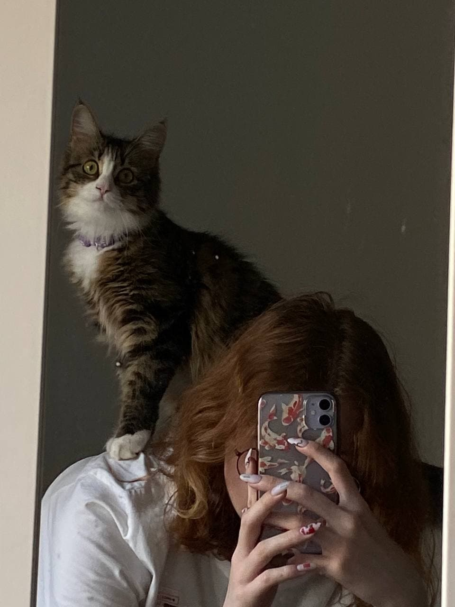

Родилась в городе Нижний Тагил, 20.11.2004. Прожила до 15 лет в пгт.Междуреченский, ХМАО. Семья состояла из бабушки, матери и младшего брата. Как все ходила в детский сад и школу, была активным ребёнком, а ещё любила ломать всё и вся. В общем, не ребёнок, а ангел.
Окончила школу с красным аттестатом. Также обучалась в ДШИ, музкальное отеление по направлению "Меховые инструменты. Аккордеон", вторым инструментом было фортепиано. Обучение продлилось 7 лет, окончила с синим аттестатом. Приобретённые навыки игры на инстурментах так и не понадобились мне в дальнейшем, поэтому до сих пор не особо понятно для чего же были эти 7 лет, но как говорили мама и бабушка, то для того, чтобы играть в переходах. После 9 класса планировала поступить на графического дизайнера, так как очень любила рисовать и даже ходила в художественную школу, совмещая с музыкальной, либо в ЕКТС, либо в художественное училище имени Шадра, но не прошла вступительный конкурс и решила идти на программиста в ЕКТС. Прожила в общежитии на 1 курсе полгода, жили достаточно весело, ели дошираки и спали днём, давали шанс и домашней работе скрасить вечера. В дальнейшем переехала и начала жить одна, но такое развитие событий стало даже в радость. На данный момент студентка 3 курса специальности "Иформационные системы и программирование". В арсенале имеются навыки кривого программирования, кусачка Лера и friend Марк, что добавляет некого разнообразия в этот список. Из достижений можно отметить рождение и грамоты за школьные олимпиады.
Со мной живёт кошка Йося, которая скрашивает дни и заставляет не расслабляться. Её я взяла в возрасте 6 месяцев и она стала моим подарком на 8 марта. Занимаемся совместной готовкой, просмотром фильмов и сериалов, а так же она очень активно старается помогать, когда я печатаю что-либо.
На самом деле жизеь человека, чеё текст вы читаете, достаточно скучная и однообразная, поэтому добавить больше нечего.
Расписание 3 курса специальности ПР